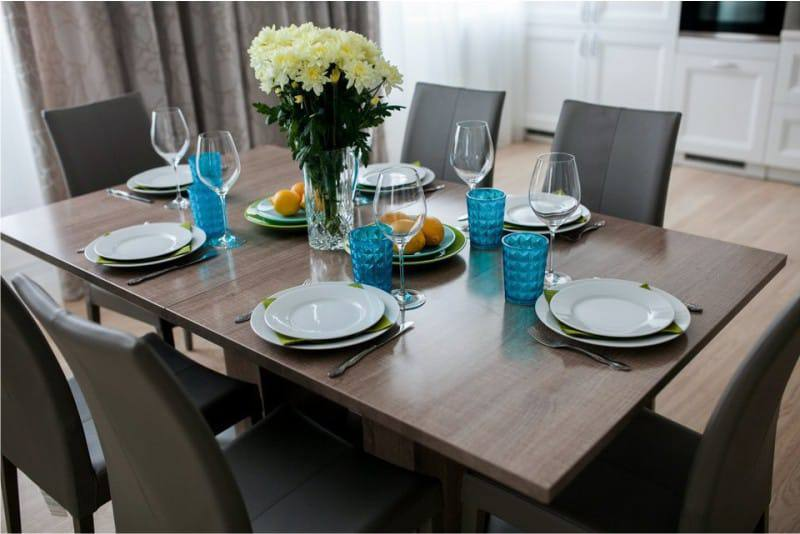

Начали с разбора домашки про семью: зять, невестка, сводная сестра и собака — член семьи. Потом учебник: диалог в мебельном магазине — дорого или дёшево, как спросить цену и как прочитать цену вслух. Даша показала, как сказать своё мнение через Ich finde … и почему лампа — это «она», а кровать — «оно». Вторая половина — повтор падежей и упражнение на артикли, а в конце главная пара занятия: liegen (лежать) и legen (класть). У каждого слова озвучка и [транскрипция].
🔊 = нажми и слушай — звук встроен в страницу, интернет не нужен
Домашка с прошлых занятий: текст про большую семью, в пропуски надо было вставить слова из списка. Даша прошлась по ответам и объяснила ошибки. Сначала слова — многие из них новые:
Две приставки, которые легко спутать.
• Schwieger- — родня через брак: der Schwiegersohn — зять (муж дочери), die Schwiegertochter — невестка (жена сына), die Schwiegereltern — родители мужа или жены. Даша сказала так: они «пришли в семью путём женитьбы».
• Stief- — «не родной по крови» в новой семье: der Stiefsohn — пасынок (сын мужа или жены от прошлого брака), die Stiefschwester — сводная сестра.
• А Pflege- — приёмный: die Pflegeeltern — приёмные родители.
🩺 behandeln в тексте значит «обращаться, относиться»: Meine Eltern behandeln ihren Schwiegersohn gut — родители хорошо относятся к зятю. Но это же главный глагол врача — лечить: Der Arzt behandelt den Patienten. Одно слово, два значения.
Фразы из текста. ⚠️ Самого листа у меня нет — это старая домашка, — поэтому фразы восстановлены по записи, где Даша читала ответы вслух. Смысл верный, но пара слов в оригинале могла стоять иначе.
Ошибки из домашки
1️⃣ В предложение «Mein ___ ist auch verheiratet» Полина поставила Schwiegertochter. Логика у неё была («раз все женаты — значит, кто-то кому-то зять»), но Даша предложила проще: перед этим сказано, что замужем Эмма, — значит, дальше «мой брат тоже женат»: Mein Bruder ist auch verheiratet.
2️⃣ Про собаку Полина написала, что он «тоже пасынок». Даша посмеялась — логику понимает, — но правильно ein Familienmitglied, член семьи.
Итог Даши: «текст был сложный, а ошибок почти не было — это хорошо».
Две находки грамматики в этом тексте
• einen Neffen: у слова der Neffe в винительном падеже прибавляется -n — не только к артиклю, но и к самому слову. Так ведут себя некоторые мужские слова на -e (der Junge → den Jungen). Пока просто запомни: «einen Neffen».
• die Schwester meines Vaters — «сестра моего папы», чья? — это Genitiv: mein → meines, Vater → Vaters. Та самая «-s у мужского рода» из таблицы падежей.
• Sie leben nicht mit uns — так прозвучало на занятии. Живее по-немецки сказать Sie wohnen nicht bei uns.
2 💶 Дёшево или дорого: billig, günstig, teuer
Перед диалогом Даша попросила записать синонимы: billig = günstig = nicht teuer — «дешёвый, недорогой».
sehr teuer или zu teuer? Это не одно и то же. sehr teuer — «очень дорого», но купить можно. zu teuer — «слишком дорого», то есть не куплю. В диалоге покупательница сначала говорит «sehr teuer», а потом твёрдо — «zu teuer».
billig и günstig. Даша дала их как синонимы, и в магазине так и есть. Маленький оттенок (моё добавление): billig иногда звучит как «дешёвка, низкое качество», а günstig — всегда хорошо: «выгодно, по хорошей цене». Если хочешь похвалить цену — бери günstig.
schön или schon?
Вопрос Полины: как не перепутать «красивый» и «уже». Разница в одной точке и в звуке: schön [шён] — красивый, с ö; schon [шон] — уже, обычное o.
3 🛋 В мебельном магазине
Учебник, Lektion 4, страница 26: продолжаем тему мебели. Задание — послушать диалог в мебельном магазине и расставить фразы по порядку, а потом сказать, кто что говорит: продавец (Verkäufer) или покупательница. Сначала слова — они же слова домашки:
die Möbel — всегда множественное
По-русски «мебель» — одно слово в единственном числе. По-немецки die Möbel — множественное: Die Möbel sind neu — «мебель новая», глагол во множественном. Один предмет мебели — das Möbelstück.
А вот сам диалог по порядку, как расставили на занятии (от B «Brauchen Sie Hilfe?» до J). Продавец — мужской голос, покупательница — женский:
Полина не поняла, что происходит в конце записи. Разгадка: пара пришла в мебельный, и мужчина просто уснул на диване — жена не могла его найти. 😄
Потом вопрос Даши: что вы думаете — стол дорогой, а лампа дешёвая? Полина пересчитала в рубли — лампа за 119 евро выходит около 11 тысяч — и ответила:
Совет с занятия для героини: «Женщина, 1400 за стол — езжайте в Икею, там нормальные цены». unglaublich — «невероятно» — Даша похвалила как хорошее новое слово.
4 🏷 Как читать цены
Правило Даши. Запятую в цене не читаем — вместо неё говорим «Euro», а слово «Cent» в конце уже не нужно.
• 9,99 € → neun Euro neunundneunzig
• 5,60 € → fünf Euro sechzig
• 0,50 € → fünfzig Cent — если евро нет совсем, центы называем
И помним урок про числа: двузначное «задом наперёд» — 99 = neunundneunzig, «девять-и-девяносто».
Потом послушали три коротких диалога (задание 6a в учебнике) и записали цены предметов. der Gegenstand — предмет, вещь. Вот что получилось:
💡 Честно: на записи смазано, что именно стоило 50 центов. Полина прочитала «das Bild», но я не уверен, что это был именно этот предмет.
Ошибка с занятия
Полина сказала: Es ist billig für den Bett. Даша поправила: für ein Bett. Две причины: кровать — das Bett, средний род, поэтому «den» не подходит вообще; и речь о кровати вообще, «для кровати такая цена — дёшево», — поэтому неопределённый артикль ein.
5 💭 Своё мнение: Ich finde …
finden — «находить». Но у немцев это ещё и главный способ сказать своё мнение: Ich finde es billig — буквально «я нахожу это дешёвым», по смыслу «по-моему, это дёшево». Даша попросила сразу начать им пользоваться.
Продавец в диалоге спрашивает Finden Sie? — «Вы так считаете?». А согласиться с кем-то — Das denke ich auch: «я тоже так думаю». ziemlich — «довольно»: ziemlich billig — довольно дёшево.
6 ⭐ er, sie, es вместо существительного
Что это вообще такое. Чтобы не повторять слово, мы заменяем его местоимением: «Кровать дорогая. Она продаётся там-то». По-английски на всё одно «it», а по-немецки — как по-русски, по роду слова:
• der → er (он) · die → sie (она) · das → es (оно) · множественное → sie (они).
Пример Даши прямо из диалога: Die Lampe kostet 119 Euro. Sie kommt aus Italien. — лампа женского рода, поэтому «она».
Смотри на немецкий род, а не на русский
Со столом и лампой роды совпали: der Tisch — он, die Lampe — она. Но кровать по-русски «она», а по-немецки das Bett — значит, es, «оно». Местоимение берёт род немецкого слова.
7 ⭐⭐ Падежи: повторяем
Даша устроила опрос по прошлому занятию: сколько падежей, какие и какие у них вопросы. Полина вспомнила: vier Fälle — четыре падежа.
Ошибка с занятия: wohin и woher
Отвечая про Dativ, Полина назвала wohin. Даша остановила: wohin? — «куда?» — уже было в Akkusativ. В Dativ — woher? — «откуда?». Запоминалка: -hin — «туда», движение к цели → Akkusativ; -her — «оттуда» → Dativ.
Четыре вида артикля — тоже повтор: нулевой (артикля нет), определённый (der, die, das), неопределённый (ein, eine), отрицательный (kein, keine). Каждый из них склоняется по падежам.
Где меняется само слово, а не только артикль — Даша напомнила ещё раз:
• Genitiv, мужской и средний род: + -s или -es — des Hundes, meines Vaters;
• Dativ, множественное: + -n — mit mehreren Kindern.
Даша разобрала по примеру на каждый падеж — все про одну собаку:
В предложении Ich gebe dem Hund Futter сразу два падежа: dem Hund — кому? — Dativ, и Futter — что? — Akkusativ. У Futter (корм) артикля нет: это нулевой артикль, как у Wasser, — корм не посчитать поштучно.
8 ✍️ Упражнение: артикль и падеж
Вставляли артикли и сразу называли падеж каждого слова. Способ всегда один: задать вопрос к слову → по вопросу понять падеж → по роду найти артикль в таблице.
Ошибки с занятия
1️⃣ Про im Garten Полина сказала «Genitiv». Нет: im = in dem, а dem — это Dativ. Играет где? — в саду.
2️⃣ К Buch Полина поставила den. Книга — das Buch, средний род, а в Akkusativ меняется только мужской. Значит, остаётся das.
3️⃣ Полина не вспомнила глагол bringen — «приносить». Даша подсказала его вот таким предложением:
in den Park или im Park? Даша заметила, что в домашке Полина пару раз писала «im Park» с глаголом gehen, но исправлять не стала: ошибка небольшая.
• Wir gehen in den Park — идём куда? — в парк → Akkusativ. С gehen обычно имеют в виду направление.
• Wir spazieren im Park — гуляем где? — в парке → Dativ. Для прогулки есть свой глагол: spazieren gehen.
mit — всегда Dativ, что бы ни спрашивали: mit dem Bus. im Fenster — по-немецки кошку видно «в окне», а не «на окне», когда смотришь с улицы. Этот вопрос задала Полина.
💡 Честно: одно предложение с das Buch на записи не разобрать — пример «Ich lese das Buch» мой, правило то же.
9 ⭐⭐ liegen или legen
Что это вообще такое. Два похожих глагола, разница в одной букве:
• liegen — лежать: это состояние, ничего не происходит. Вопрос wo? (где?) → Dativ.
• legen — класть: это действие, предмет двигается. Вопрос wohin? (куда?) → Akkusativ.
Предлог один и тот же — auf, а падеж разный. Та же пара есть со «стоять»: stehen — стоять (где? Dativ) и stellen — ставить (куда? Akkusativ). Оба глагола правильные: er liegt, du liegst · er legt, du legst.
Два предложения, которые Даша велела держать в головеDas Buch liegt auf dem Tisch. — Лежит где? — на столе → Dativ. Ich lege das Buch auf den Tisch. — Кладу куда? — на стол → Akkusativ.
Ошибка с занятия: Полина сказала Ich lege das Buch auf dem Tisch. После вопроса «куда?» сама исправила на auf den Tisch. 👍
10 💬 «Вопросов нет» и «всё понятно»
В конце Даша спросила, есть ли вопросы. Полина хотела сказать «я всё поняла», и Даша дала готовые фразы. Совсем коротко — Alles klar! Или в прошедшем времени — Ich habe verstanden.
Маленькое уточнение (моё): Полина сказала «Ich habe keine Frage», и это можно, но обычно говорят во множественном — keine Fragen, «никаких вопросов».
На этом связь оборвалась — прощания на записи нет.
11 📚 Домашка от Даши
Прислана в Telegram 11.09. Поля сохраняются прямо в браузере. У предложений есть кнопка «перевод», а ответы открываются с пояснением, почему именно так — можно проверить себя самой, не дожидаясь Даши.
Задание 1
Учить падежи и их вопросы
Таблица — в разделе 7. Проверь себя: к какому падежу относится вопрос?
Задание 2
Учить склонение определённого артикля
Заполни таблицу по памяти, потом открой ответ.
Задание 3
Вставить определённый артикль
15 предложений с листа. В некоторых по два-три пропуска. Звук у предложения появится в ответах — чтобы не подсказывал.
💡 Порядок тот же, что на занятии: какой род у слова → какой вопрос к нему → какой падеж. И пригодятся три особых случая: даты (der 8. März), реки и некоторые страны (die Spree, die Schweiz) и чего? — Genitiv (der Welt).
Задание 4
Учить слова по теме Geschirr / Besteck и мебель
Мебель этого занятия — в разделе 3 выше, со звуком; она же уйдёт колодой этого занятия в ЗУБР. Посуда и приборы — в занятии 11. Заучивать удобнее в ЗУБРе: колоды «Посуда и приборы», «Предметы в доме», «Квартира и обстановка». Открыть ЗУБР →
🎮 Игра от Даши — Wordwall «Geschirr/Besteck»: перетащить каждое слово к своей картинке. 16 слов: Tasse, Gabel, Serviette, Teelöffel, Löffel, Teller, Pfeffer, Topf, Salz, Weinglas, Wasserglas, Messer, Pfanne, Schüssel, Kochbuch, Wischtuch — все они есть в занятии 11, со звуком. В колоде ЗУБРа «Посуда и приборы» восьми из них не было — 15.09 добавил, теперь вся игра Даши учится там целиком. Открыть игру на Wordwall → Совет: на странице игры есть кнопка «Переключить шаблон» — те же слова можно сыграть по-другому: «Найди пару», «Викторина», «Анаграмма», «Флэш-карты». Бесплатно и без регистрации.
Задание 5
Описать письменно картинку со столом

Слова-помощники:
💡 Как на прошлом занятии: Auf dem Bild gibt es … (глагол вторым!), steht / stehen — стоит, liegt / liegen — лежит, in der Mitte — посередине, im Hintergrund — на заднем плане. После «где?» — Dativ: auf dem Tisch, neben den Tellern.
Мой образец — не единственно верный, у тебя может выйти по-своему:
Задание 6 · лист C9
Was / Wer ist wo? — Что где? Кто где?
Вставь предлог: aus · in · an · vor · auf · unter. Первое — образец с листа. Картинки — на листе: открыть лист C9.
Задание 7 · лист C2
Frau Müller kauft Möbel — фрау Мюллер покупает мебель
Вставь существительное вместе с неопределённым артиклем. Слова: Schrank · Stühle (Pl) · Teppich · Bett · Sofa · Kühlschrank · Uhr · Herd · Tisch. В скобках — первые и последние буквы с листа. Номера — как на картинке листа C2.
Задание 8 · лист C6
Ich suche eine Wohnung — Я ищу квартиру
Телефонный разговор по объявлению. Слова: Stock · Apartment · schön · Fenster (Pl) · ruhig · Anzeige · liegt · Ecke · Dusche · Quadratmeter · hell. Первое — образец.
Дополнительно · 1
Посмотреть видео про кухню и ответить на вопросы
📺 «Wortschatz: Küche» — канал Deutsch1, 19 минут. Девушка показывает свою кухню ящик за ящиком и называет всё по-немецки, медленно и чётко. Смотреть на YouTube →(можно включить немецкие субтитры — они автоматические, с ошибками, но помогают)
⚠️ Опечатка в вопросе 4: там «ihr» с маленькой буквы — это было бы «её» или «их». По смыслу Даша спрашивает Ihr — «ваш», с большой.
Слова из видео — всё, что она показала, по порядку ящиков. В ЗУБР они уйдут вместе с занятием:
Три находки из видео:
• die Spüle — кухонная мойка, а das Waschbecken — раковина в ванной. Она сама говорит: не путать.
• einräumen / ausräumen — загрузить / разгрузить посудомойку. Приставка отделяется и уходит в конец: Ich räume die Spülmaschine ein.
• Jeder Topf findet seinen Deckel — «каждая кастрюля найдёт свою крышку»: поговорка про людей, для каждого найдётся пара. Она засмеялась, потому что у двух её кастрюль крышек как раз нет. 😄
А за правильно произнесённое die Dunstabzugshaube (вытяжка) она обещала пакет мармеладных мишек.
Дополнительно · 2
Учебник: страницы 29–32
Всё, кроме упражнений 1a, 2c, 5, 6a, 6b, 6d — это задания, где надо слушать или говорить, их Даша сделает с тобой на занятии. На уроке она сказала: «следующую лекцию сделать без меня», и там будет письмо.
💾 Всё, что ты напечатала, сохраняется автоматически в этом браузере. На другом устройстве не появится.